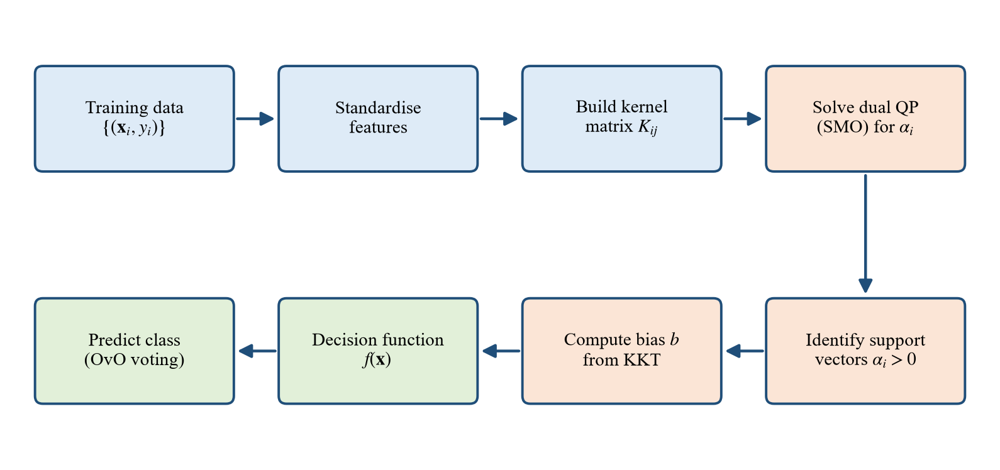

06 · The mathematics
The derivation, line by line
Section 3.5 of the report, unpacked. If you can rebuild this on a whiteboard you can defend the project. Equation numbers match the report.
In plain words
The derivation is a story in seven steps.
1 · Write down what we want
A wide margin, with a fine for every point that breaks it. That is the primal problem.
2 · Move the rules into the objective
Attach a weight (Lagrange multiplier) to every rule and add them in. That is the Lagrangian.
3 · Take derivatives and set them to zero
Three short results fall out. The most important: \(\mathbf{w}\) is a weighted sum of the training points.
4 · Substitute back
\(\mathbf{w}\), \(b\) and \(\xi\) disappear. What is left depends only on the multipliers and on dot products between readings. That is the dual.
5 · Swap dot products for a kernel
Because only dot products appear, we can replace them with the RBF kernel and get a curved boundary for free.
6 · Read off who matters
The KKT conditions say a multiplier can be non-zero only for points on or inside the margin. Those are the support vectors. Everything else drops out.
7 · Predict
A new reading is compared only with the support vectors. Six pairwise SVMs vote. Done in about a millisecond.
1 · The soft-margin primal problem
First term: keep the margin \(2/\|\mathbf{w}\|\) wide. Second term: pay \(C\) for every unit of margin violation. \(\phi\) maps a reading into feature space (for a linear SVM, \(\phi(\mathbf{x})=\mathbf{x}\)). The objective is convex and the constraints are linear, so this is a convex quadratic programme.
2 · The Lagrangian
Give each margin constraint a multiplier \(\alpha_i\ge0\) and each \(\xi_i\ge0\) constraint a multiplier \(\mu_i\ge0\). Subtract them from the objective:
3 · Stationarity: set the derivatives to zero
The one line to remember
(3.13) says the boundary is built from the training points themselves, each weighted by \(\alpha_iy_i\). Points with \(\alpha_i=0\) contribute nothing. And (3.15) follows because \(\mu_i=C-\alpha_i\) must be \(\ge0\).
4 · The dual problem
Put (3.13)–(3.15) back into \(\mathcal{L}\). The \(\xi_i\) terms cancel because \(C-\alpha_i-\mu_i=0\); the \(b\) term cancels because \(\sum\alpha_iy_i=0\). Using \(\|\mathbf{w}\|^2=\sum_i\sum_j\alpha_i\alpha_jy_iy_j\,\phi(\mathbf{x}_i)^\top\phi(\mathbf{x}_j)\) and writing \(K(\mathbf{x}_i,\mathbf{x}_j)=\phi(\mathbf{x}_i)^\top\phi(\mathbf{x}_j)\):
In matrix form: minimise \(\tfrac12\boldsymbol\alpha^\top Q\boldsymbol\alpha-\mathbf{e}^\top\boldsymbol\alpha\) with \(Q_{ij}=y_iy_jK(\mathbf{x}_i,\mathbf{x}_j)\). If \(K\) is positive semi-definite, so is \(Q\), and the dual is convex. The primal constraints are linear and feasible, so strong duality holds (Slater's condition): primal and dual give the same optimum.
Why bother with the dual?
Three reasons. It has simple box constraints \(0\le\alpha_i\le C\). Its size depends on the number of samples \(n\), not on the dimension of \(\phi\) (which is infinite for RBF). And the data appear only through \(K\), which is what makes the kernel trick possible.
5 · KKT conditions and support vectors
For a convex problem the KKT conditions are necessary and sufficient for optimality. Besides feasibility and (3.13)–(3.15), they include complementary slackness:
| Case | Consequence | Meaning |
|---|---|---|
| \(\alpha_i=0\) | \(y_if(\mathbf{x}_i)\ge1\) | safely outside the margin — not a support vector |
| \(0<\alpha_i<C\) | \(\xi_i=0,\ y_if(\mathbf{x}_i)=1\) | exactly on the margin — "free" support vector |
| \(\alpha_i=C\) | \(y_if(\mathbf{x}_i)\le1\) | inside the margin or misclassified — "bounded" support vector |
The bias comes from any free support vector \(s\), where \(y_sf(\mathbf{x}_s)=1\). LIBSVM averages over all free support vectors \(\mathcal{F}\) for stability:
In your model: 1,304 of the 4,480 training readings (29.1%) are support vectors — 331 NoGas, 312 Perfume, 241 Smoke, 420 Mixture.
6 · Kernels and Mercer's condition
Mercer's theorem: a symmetric function is a valid kernel (an inner product in some space) exactly when every Gram matrix \(G_{ij}=K(\mathbf{x}_i,\mathbf{x}_j)\) is positive semi-definite: \(\mathbf{c}^\top G\mathbf{c}\ge0\) for all \(\mathbf{c}\). This guarantees the dual stays convex. The RBF kernel passes, and its feature space is infinite-dimensional.
7 · The decision function and voting
Substitute (3.13) into \(f(\mathbf{x})=\mathbf{w}^\top\phi(\mathbf{x})+b\):
Only support vectors appear. For four classes, the six pairwise SVMs \(f_{pq}\) vote:
The Python lab, Cell 7 computes (3.23) by hand from the trained model's support vectors and shows it matches scikit-learn to many decimal places.
8 · Turning scores into probabilities (Platt scaling)
\(A\) and \(B\) are fitted by minimising cross-entropy on held-out scores from internal cross-validation. For four classes, the six pairwise probabilities are combined by pairwise coupling (Wu et al., 2004). These probabilities draw the ROC curves and the confidence column in Table 19.
9 · Solving it, and how fast prediction is
Solving (SMO). Because of \(\sum\alpha_iy_i=0\), multipliers must change at least two at a time. SMO picks a pair that breaks the KKT conditions, solves that two-variable problem exactly, clips to \([0,C]\), and repeats until every KKT condition holds within a tolerance.

Prediction cost. One kernel value per support vector, each costing \(O(d)\):
With \(n_{SV}=1{,}304\) and \(d=7\), that is roughly \(10^4\) operations per reading, which is why the measured latency is about 1 ms. Training costs between \(O(dn^2)\) and \(O(dn^3)\), but it is done once, offline.
The whiteboard version
Primal
\(\min\ \tfrac12\|\mathbf{w}\|^2+C\sum\xi_i\) s.t. \(y_i(\mathbf{w}^\top\phi_i+b)\ge1-\xi_i,\ \xi_i\ge0\).
Lagrangian
Subtract \(\alpha_i[\cdot]\) and \(\mu_i\xi_i\).
Derivatives
\(\mathbf{w}=\sum\alpha_iy_i\phi_i\), \(\ \sum\alpha_iy_i=0\), \(\ 0\le\alpha_i\le C\).
Dual
\(\max\ \sum\alpha_i-\tfrac12\sum\sum\alpha_i\alpha_jy_iy_jK_{ij}\).
KKT
\(\alpha_i>0\) only on or inside the margin → support vectors; \(b\) from a free one.
Predict
\(f(\mathbf{x})=\sum_{SV}\alpha_iy_iK(\mathbf{x}_i,\mathbf{x})+b\); 6 pairwise votes.